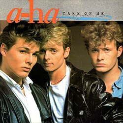
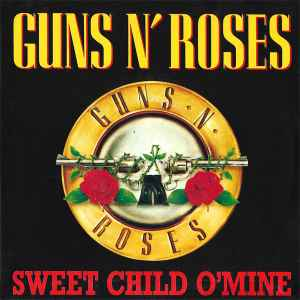
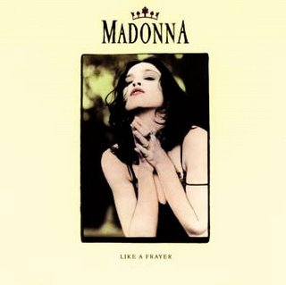
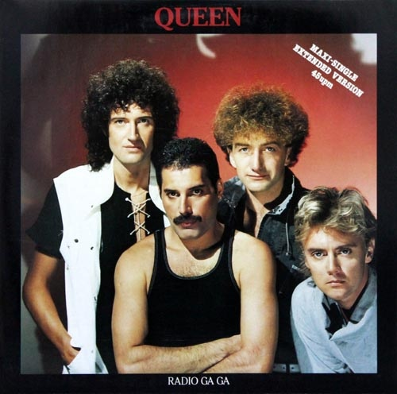
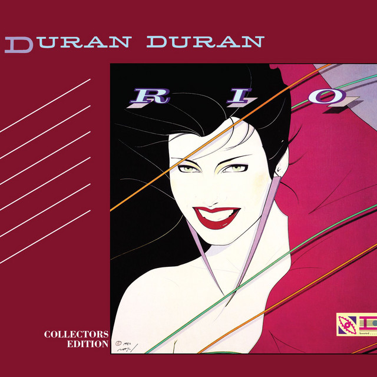
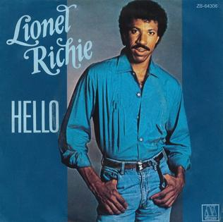

Michael Jackson - Um dos maiores marcos da música pop, famosa por sua linha de baixo inconfundível e o passo Moonwalk.
Curiosidade: O videoclipe de "Billie Jean" foi o primeiro a ser exibido na MTV, ajudando a popularizar o canal.
Curiosidade: O videoclipe de "Billie Jean" foi o primeiro a ser exibido na MTV, ajudando a popularizar o canal.

Curiosidade: O videoclipe de "Take On Me" foi considerado um dos melhores da história da MTV.

Curiosidade: O clipe da música tornou-se um marco visual da MTV graças ao visual andrógino de Annie Lennox — usando terno masculino e cabelo curto alaranjado —, algo extremamente ousado para a época e que desafiava os padrões da indústria musical.

Curiosidade: - Ícone do hard rock mundial, consagrada pelo riff de guitarra inconfundível de Slash.

Curiosidade: A música foi controversa por sua abordagem religiosa, mas também foi elogiada por sua produção inovadora.

Curiosidade: O videoclipe foi filmado em uma gravação ao vivo em um estúdio de televisão, com cenas de performance em tempo real.
.jpg)
Curiosidade: A música foi utilizada como trilha sonora em um dos filmes mais populares da década.

Ritmo acelerado, baixos marcantes e sintetizadores energéticos que viraram marca registrada da era áurea da MTV.

Curiosidade: O clipe da música tornou-se um marco visual da MTV graças ao visual andrógino de Annie Lennox — usando terno masculino e cabelo curto alaranjado —, algo extremamente ousado para a época e que desafiava os padrões da indústria musical.

Curiosidade: A música foi criada com o objetivo de ser uma peça fundamental para o movimento da dança eletrônica dos anos 80.

Curiosidade: A música foi inspirada em uma experiência pessoal de Lionel Richie e se tornou um dos maiores sucessos da década.

Curiosidade: A música foi criada como uma resposta ao clima de ansiedade e incerteza da época.